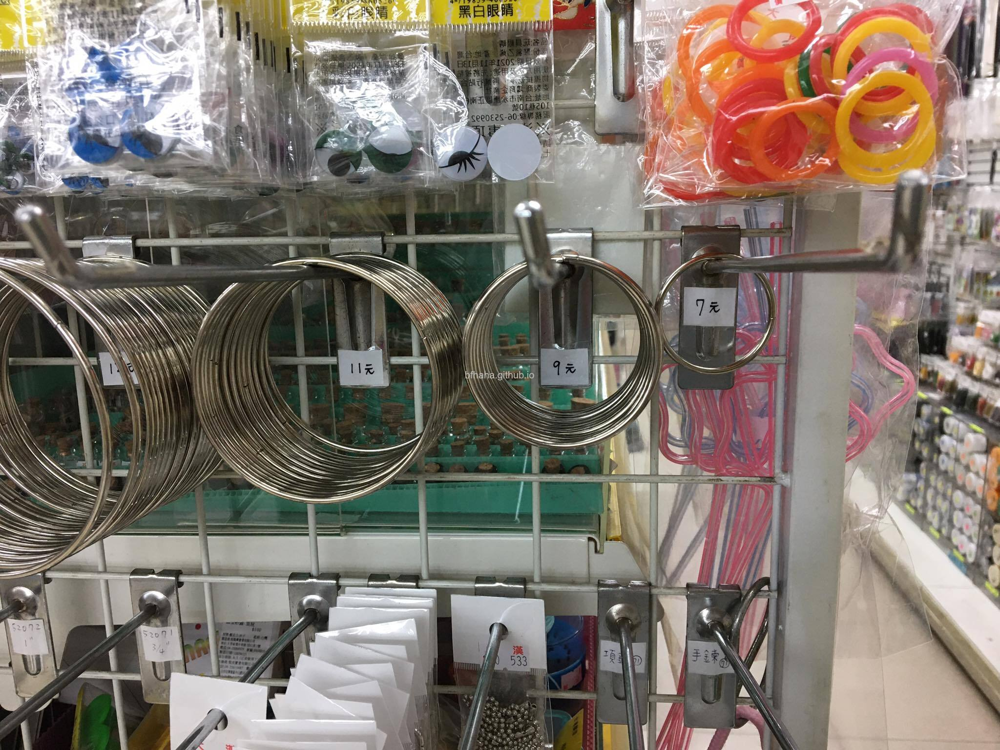
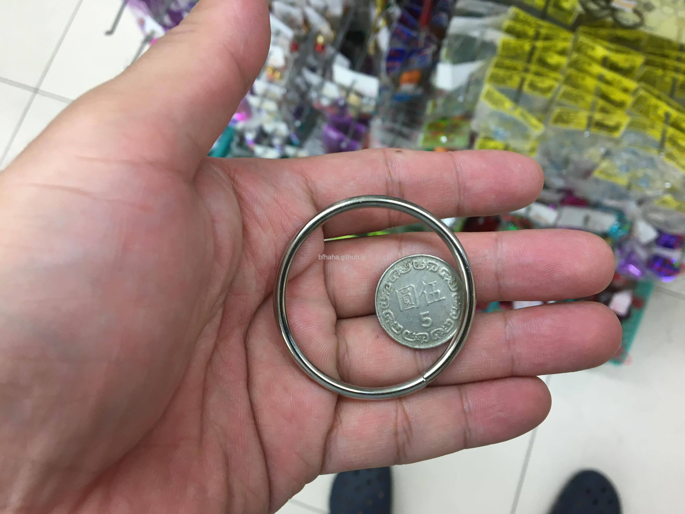
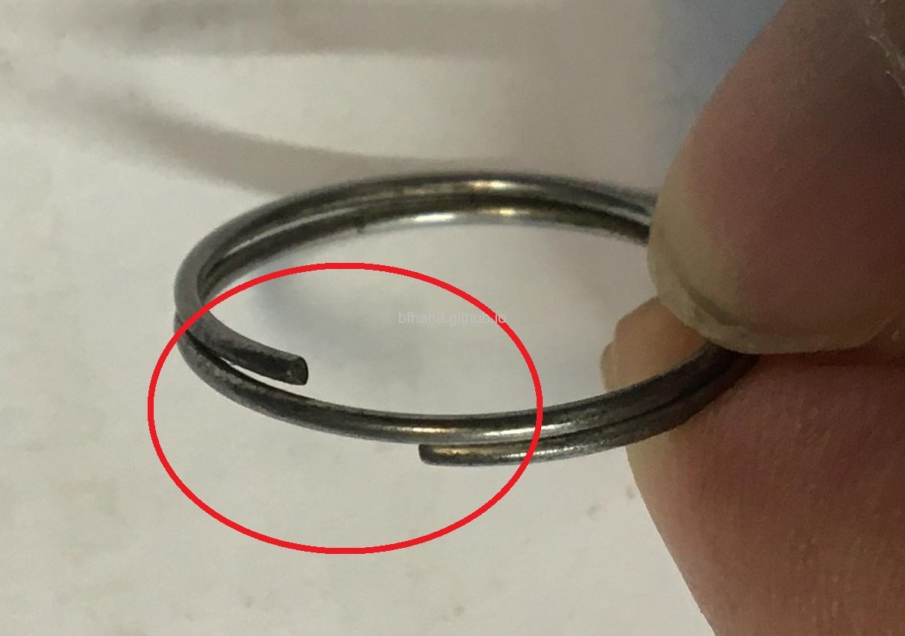
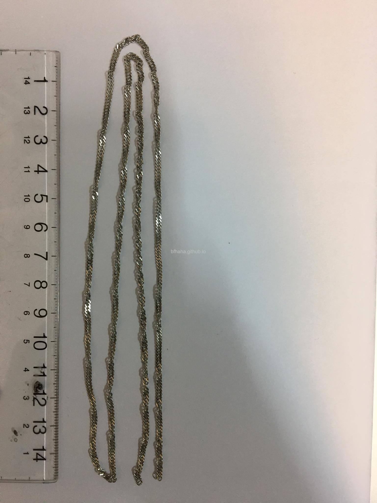
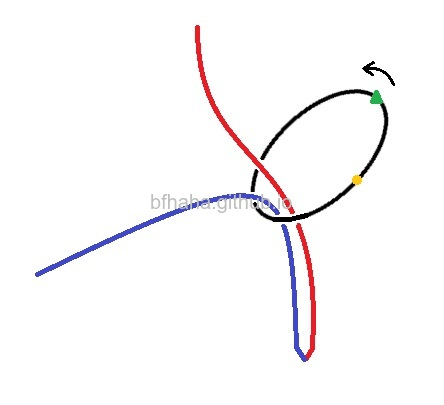
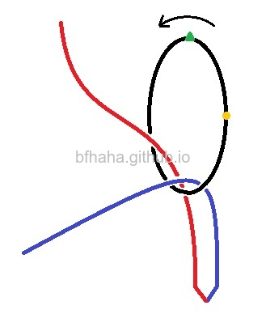
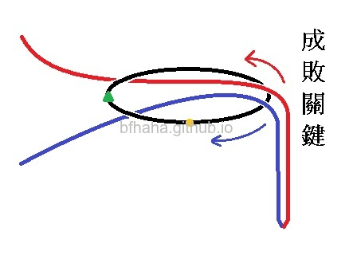
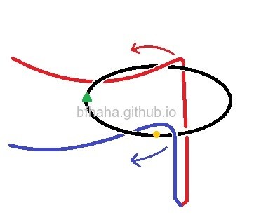
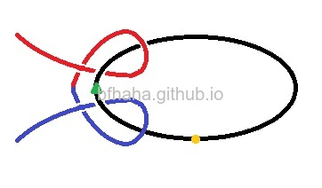

明日環緣由及原理
緣由
- 明日環是一種魔術道具，是把一個環透過一種看似不可思議的方式套進項鍊中。
- 會叫明日環是因為劉德華在"再說一次我愛你"這部電影中變這個魔術時所說的台詞：「所有欠你的，明天都還給你。」
- "再說一次我愛你"這部電影由劉德華、蔡卓妍、楊采妮主演，可以在這裡看，劉德華在片中變了兩次，分別是大約31:00跟1:03:00的地方。Youtube也有，但是Youtube的這個版本第二次變的片段被剪掉了。
材料
- 環的部分去美術用品社買就有了，很便宜。

- 買最小的環即可，最小的環7元，跟5元硬幣比較大小。

- 一些男生可能會想要套戒指，鑰匙圈的大小似乎很相近，可以拿來練習，不過鑰匙圈上頭尾的部分會卡住（環要在鍊子上滑動）。

- 鍊子的部分有便宜有貴，原則就是環在鍊子上滑動時要順。例如筆者買的鍊子雖然很漂亮很適合做項鍊使用，但是不適合變這個魔術，因為有時候環套進去的時候，鍊子本身就會纏成一團。

- 鍊子的長度大約是2尺（60公分）。

原理
- 左手拿項鍊，右手拿環，拿環的手勢有人主張如圖中的方式拿，因為食指跟拇指放開時，環會被中指卡住，讓環逆時針旋轉，這是很重要的一點，等下就會知道為什麼需要這樣。紅色跟藍色是同一條鍊子，不過講解時為了區別，所以分兩種顏色。環上做的綠色三角形及黃色圓形記號只是為了方便讀者瞭解環是如何動作的。

- 右手放開環時，讓環逆時針旋轉。

- 繼續旋轉，要旋轉超過90度才行。

- 圖中的環旋轉了180度，但實際上並不會如此，這裡只是方便說明。這裡是成敗關鍵，這時候懸掛在右側的鍊子會開始分開。大部分的人都是在這裡失敗。

- 鍊子繼續分開。

- 最後環套入鍊中。這部慢動作影片也很不錯，可以參考。

結語
最後提醒各位男士，如果要用這個魔術來把妹，那成功的關鍵是在於長相或是身價而不是熟練或是手法。